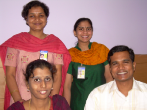

|  | SL-275, FJ-310... if you know what these identifiers mean, then you've probably taken at least one of Sun's Java courses. But how are they written? And who writes them? In this interview, we meet a team of content developers in Bangalore, India, who are responsible for analyzing and filling out the content of several of Sun's Java courses. During this interview, the following Java courses are mentioned:
Three other courses mentioned in this interview, DWS-300, DWS-3111, and DWS-4112, are currently in progress and no page like the above is available for these yet. In the photo, you see Uma Sivakumar and Venu Poddar in the front row. Behind them, from left to right, are Paromita Dutta and Bhuvaneshwari Panchapakesan. Lets meet them, find out something about their background and the work that they do... |
Uma: I work as a content developer in Sun Learning Services. I've been into technology and development for the past 10 years, primarily on content development in the areas of Java, J2EE, and SOA. Here at Sun I've developed a course on web services, mostly focusing on the security of web services, and on new Java SE 6 features. Currently, I am developing a composite application using the NetBeans Enterprise pack.
Paromita: I've been with Sun since February 2006. I have 7 years of experience in the training and learning domain. At Sun I've developed a course on web services, DWS-3111, called Creating Web Services Using Java Technology. The labs have been created using NetBeans IDE 5.5. Before this, I worked at NIIT as an instructor. NIIT is India's primary learning provider and a delivery partner for Sun Training in India. I also created SL-110, Fundamentals of the Java Programming Language. Future versions of this course may be delivered in NetBeans. Currently, I'm working on SL-275, with Asok Perumainar in the US. Here, the labs have been developed using NetBeans IDE 5.5 and the course is based on Java SE 6.
Bhuvaneshwari: I've been with Sun for the past 3 years. I'm a Java certified programmer. Until I joined as a content developer in April 2006, I was a developer and QE engineer, working in the area of JMS. I have used Swing, as well as other core Java technologies. I started off with understanding the content development process, and working with others on web service courses. Right now I'm working on SL-285, about developing applications with the Java SE platform, along with Venu. We are enhancing this course with NetBeans IDE 5.5 features such as JUnit, JMX, and Matisse, which is the NetBeans GUI Builder. We are enhancing several labs with these latest feature in NetBeans IDE.
Venu: I've been a course developer at Sun for the past year. Prior to this, my major experience was also as a content developer, where I created course content for NIIT, on Java SE, Java EE, and the Redhat Linux platform. In the past year I've worked on the DWS-4112 course, which is about designing Java web services. Currently I am working on SL-285, revision e, together with Bhuvaneshwari. I am focusing on the introduction of Matisse, the NetBeans GUI Builder, in this course.
Uma: I've been using NetBeans for all the courses I've worked on. One good thing is that it is very intuitive and easy to use. What I don't like is that I don't find code completion as good as in JDeveloper. But I hear that code completion is going to be improved in NetBeans IDE 6, so I'm looking forward to that. Also, I miss an HTML editor. As a courseware developer, I use DreamWeaver for web content development, but would prefer to use NetBeans to do so.
Bhuvaneshwari: Previously, I worked in Eclipse. Moving to NetBeans was a very easy transformation, I didn't ecnounter any problems. Some features I found better. I used EJB 2 before in Eclipse, which is now EJB 3, so the entire concept has changed and the NetBeans tooling is very good.
Uma: It is really great to have the integrated Sun Java System Application Server and the Tomcat Web Server.
Paromita: It is very intutive. Eclipse appears a bit complicated for a non-programmer. I ran a session on NetBeans recently for an external audience. Their tool usage was mixed, some using NetBeans and some Eclipse. There was one CEO of a small company who wished to migrate all his Eclipse projects to NetBeans. He wanted a checklist so that the migration is smooth. They found the introduction of Matisse, and also the Profiler, very useful. One of them has been using the Mobility pack of NetBeans extensively. There were queries around the performance of the IDE as they found that Eclipse took a lot of time to build very large projects.
Venu: What I don't like are all the start up messages you see when starting the Sun Java System Application Server.
Bhuvaneshwari: At least those messages should be more specific.
Venu: They used to have many like that with RedHat, but later they moved them, and now you can choose whether you want to see them. A progress bar is normally enough. By the way, this complaint does not mean I don't like NetBeans! In fact, I am very happy with it.
Uma: The best thing is that is is available for free!
Venu: I've found it very easy to pick up NetBeans. And I have some experience with both Eclipse and JDeveloper.
Bhuvaneshwari: I've worked with WebSphere, JDeveloper, Visual Age for Java... I've used a variety of different tools, and transitioned from one to the other. With NetBeans, the transition has not been tedious, in fact, it has been quite easy. The NetBeans tutorials provide really clear-cut steps that enable programmers to get started easily and makes them really comfortable quickly. Being able to go to the Update Center to add plugins, makes everything very simple.
Uma: The new look and feel is great...
Venu: ...and so is the large size of the download button!
Bhuvaneshwari: It really is a one-stop-shop for everything, including all related technologies. And the Search functionality is much better.
Uma: The content management is really good.
Bhuvaneshwari: The Flash demos and tutorials I saw there are very nice.
Uma: Flash demos and tutorials are easy to submit, there isn't much bureaucracy.
Paromita: The Docs and Support link is very useful. If I've been out of touch, and I need to know what new has come up in the Java EE space, I can go to netbeans.org and get the latest information. So it is a dual deal... you can see what NetBeans supports, and thereby see what the latest technologies are.
Uma: I like how the site doesn't overload you with stuff, nor repeat stuff. I hope it will stay this way!
Bhuvaneshwari: More discussions, questions/answers, FAQs, is always good.
Venu: I read about the interesting collaboration feature, whereby one can talk on-line. That's really cool. Nothing I can think of that needs improving.
Uma: I use information and tutorials on the NetBeans Enterprise pack. I find it all really good.
Uma: We follow the ADDIE model. That means Analysis, Design, Development, Implementation, and Evaluation. For each course, we follow each of these phases.
In the analysis phase, we asses what is needed for the course, and the output of this phase is a content outline and a concept document. Then we enter the design phase, where we estimate resources. Resources include cost, timing, and scheduling. At this stage we need to get buy-in from various people involved, such as the engineering team and the delivery people. These first two phases are driven by curriculum managers in the US. We do have input here, but most of it is the responsibility of the curriculum managers.
The third phase, development, is our core work as course developers. We use OpenOffice.org and Framemaker to fill in the details of the content outline. The four of us do this work, together with two colleagues, Rick Evans and Asok Perumainar, in the US. We create our own schedules and need to adhere to them.
Paromita: We create the schedule. The content development team is driven in time with the product release. For example, the web service courses are delivered in tandem with the related NetBeans pack releases.
Uma: Another example is the composite application that I am working on, for DWS-300, which will be released together with the related release of the NetBeans Enterprise pack.
Bhuvaneshwari: In the next phases, we need to evaluate the content that we create. This is called "Beta Teaching". We select the audience internally, consisting of anyone from engineers to instructors. They evaluate the course in terms of timelines, scheduling, and validation of labs. We also create a classroom environemnt, on a "jump start server". And we create "jump pack" bundles that set up the environment for the courses, on multiple server.
Venu: Depending on the resources and schedules, course development can be distributed to outside vendors too. In the meantime, we send for a "cascaded edit" process, which includes technical reviews, editorial reviews, and validation.
Venu: We use OpenOffice.org and Framemaker.
Uma: Our content is based on the design document.
Paromita: We write content on the topic in question and refer to technical articles from Sun engineers. And the engineering group helps in reviewing and validating content, and also in designing appropriate labs.
Bhuvaneshwari: The "Beta Teach" is the way by which we get content validated. And it is for free. It is done in a process, whereby managers are involved, because it means the people in question are in a training course for 2, 3, or 5 days.
Uma: Well, we're beginning with something called "chunking". This refocusing is on modular content. We have found that not all customers want to follow an entire course. Therefore, we're going to make courseware available as "chunks" or modules, so that customers can pick and choose what they want.
Venu: For example, in SL-285, there is a module on JUnit and another module on JMX. The whole module can be taken out of the course and taught separately.
Bhuvaneshwari: Another example is in the NetBeans Enterprise pack, where we have a module on the XML Schema Editor. This is a standalone module, which can be taken out of the complete course and delivered as one whole separate module.
Uma: Similarly, the BPEL process is a module. So, people will not need to enroll for the whole course. This saves time and money and lets the student learn exactly what they need, just focusing on those modules that are of interest to them.
Venu: The "chunking" approach is currently still in development, but is looking very promising. During the "Beta Teach" phases, we're trying to get information on what areas can best be chunked.
Venu: Well, we separate the tool-specific instructions into a separate Tool Reference Guide. The courseware and labs are about generic Java concepts and tasks. Only when something is specific to NetBeans IDE, do we provide a reference to the Tool Reference Guide, where the required steps are outlined.
Uma: We really want to communicate the message that we want to teach Java using an IDE, because it makes developers much more productive. This is absolutely a real life scenario, because no one asks you to develop code in a textpad anymore!